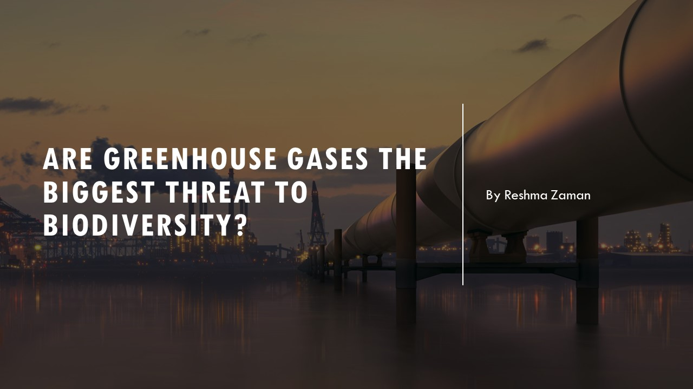
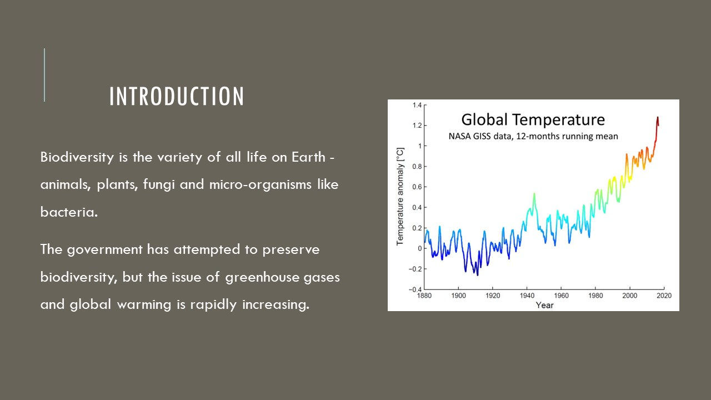
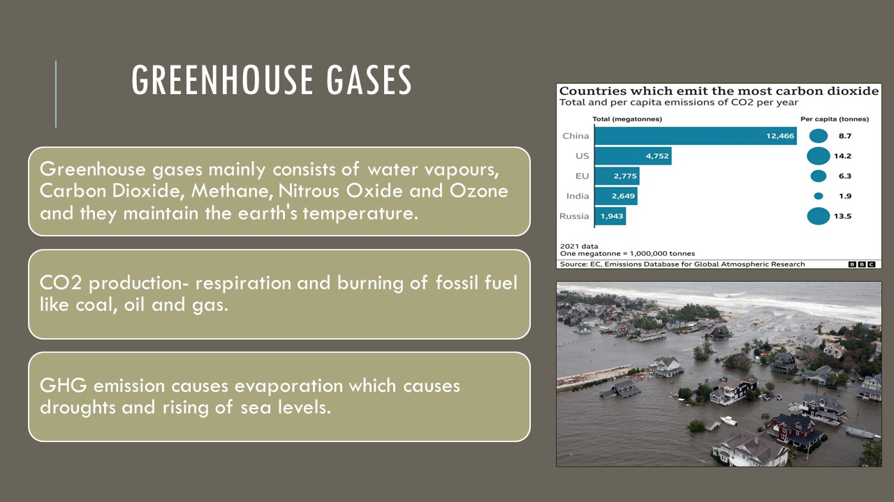
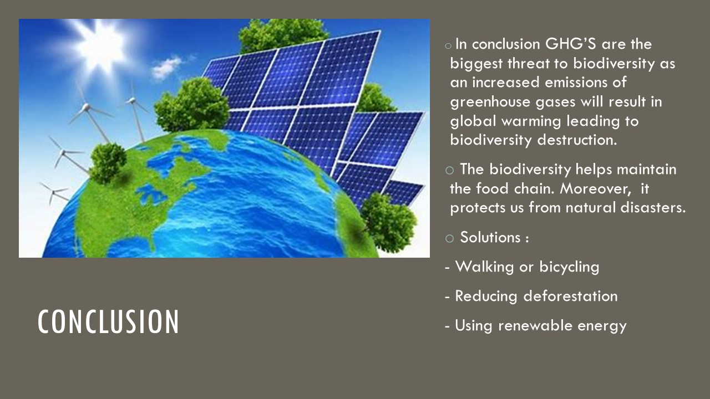

<!DOCTYPE html>

<html> 

  <head>
    <head>
      
    
    </head>

    <h1><b>ENG0018 Computor Laboratory 2023/24</b></h1>
    <h2>Student URN: 6805450</h2>

    <hr>
    <h2 style="font-family:calibri;"><b>Are greenhouse gases the biggest threat to biodiversity?</b></h2>
    <hr>

    <!style for tables>
    <style>
 table {
             font-family: arial, sans-serif;
             border-collapes: collapse;
             width: 30%;

           }

           td, th {
             border: 1px solid #dddddd
             text-align: left;
             padding: 8px;
          }

          tr:nth-child(even) {
            background-colour: #dddddd;
          }
         


     </style>

   <style> 
p.ex1 {
  margine-left: 150px;
}
p.ex2 {
  margine-left: 250px;
}
p.ex3 {
  margine-left: 250px;
}
</style>
  </head>

  <meta name="viewport" content="width=device-width, initial-scale=1">
  <link rel="stylesheet" href="https://www.w3schools.com/w3css/4/w3.css">
  <style>
  .mySlides {display:none;}
  </style>
  
  <body style="background-color:#FFFFFF;margin-left:50px;">
  </body>
  <!table of content>
  <table>

    <tr>
<th><h3>Table of Contents</h3></th>
    </tr>
    <tr>
      <td><a href="#Abstract">Abstract</a></td>
    </tr>
    <tr>
      <td><a href="#Introduction">Introduction</a></td>
    </tr>
    <tr>
      <td><a href="#Analysis and discussion">Analysis and discussion</a></td>
    </tr>
    <tr>
      <td><a href="#References">References</a></td>
    </tr>
   
    </table>

    <hr>
    <h3 style="font-family:calibri;text-align:justify;margin-right:50px" id="Abstract">Abstract</h3>
  </hr>
 
  <p class="ex1">
    <pre>
This article tells us how the greenhouse gases are the major cause of biodiversity destruction. Since the industrial revolution, the major elements for greenhouse gas emissions are human activities especially
combustion of fossil fuel. These gases cause climatic change by trapping heat. Day by day the earths becoming warmer which is resulting in the melting of glaciers and changing the precipitation pattern. The
greenhouse gas emission is resulting in numerous problems to occur such as global warming and the destruction of biodiversity by causing extinction of species. The reason of choosing this topic is to explore 
the facts and to increase my own knowledge as well as to create awareness about greenhouse gas emission. 
      </pre>
</p>
 
  <hr>
    <h3 style="font-family:calibri;text-align:justify;margin-right:50px" id="Introduction">Introduction</h3>
  </hr>

  <p class="ex2">
    <pre>
 Biodiversity consists of a variety of species such as plants, animals and different micro organisms. (National Geographic, n.d.).

One of the biggest threats to the planet includes greenhouse gases. These are gases that absorb infrared radiation emitted from the earth’s surface <a href="#Mann, 2019">(Mann, 2019)</a>. Global warming is also hazardous to biodiversity. 
The issue of greenhouse gases and global warming is rapidly increasing. Figures show that the average temperature globally has increased from 0.40 degrees to 0.74 degrees. I chose this topic because I wanted to
reflect upon the danger that biodiversity faces every single day.
 </pre>
   
  </p>

	<head>
    <head>
      
    
    </head>
		
   <hr>
    <h2 style="font-family:calibri;text-align:justify;margin-right:50px" id="Analysis and discussion">Analysis and discussion</h2>
  </hr>
 
  <p class="ex3">
    <pre>

Greenhouse gases are the gases which absorb and emit infrared radiations contributing to greenhouse effect (greenhouse gas, n.d.). Gases which make up the greenhouse gases are mainly water vapours, Carbon Dioxide,
Methane, Nitrous Oxide and Ozone. The largest source of greenhouse gas emission is from human activities such as burning fossil fuels, electricity and transportation (EPA, 2018). These gases maintain the earth’s 
temperature by retaining heat energy. China is one of the few countries which is the world’s largest carbon dioxide emitter followed by USA (15%), EU-28 (10%) and India (7%). Furthermore, if these greenhouse gas 
emissions keep increasing day by day it will eventually affect the ozone layer (roser, 2017).

According to NASA, only 30% of radiations are reflected to the outer space by the clouds and ice. The remaining 70% is absorbed by the lands and the oceans (Marc, 2019). In addition, different greenhouse 
gases are produced from agricultural practices. Carbon dioxide is mainly produced by respiration and burning of fossil fuels like coal, oil and gas. As the research published by the Duke University,
the main cause of the release of carbon dioxide is deforestation. In 2010 the global resource assessment stated, when trees and forests are cut down, they release the carbon dioxide stored in them 
for photosynthesis in the atmosphere (marc, 2019).

Greenhouse gas emission causes changes like evaporation from the land and the sea increases. This in turn causes droughts in parts of the world where increased evaporation is not compensated 
(british geological servay , 2020). The sea levels rise because of the melting ice, snow and thermal expansion of sea. The areas which are just above the sea level are now submerged for example 
some pacific island nations are partially or completely expected to be submerged at the end of the century (british geological servay , 2020).

Strict courses of action are needed one of which is by choosing the right lighting option for your living space. Most of the air pollution is created by vehicles. Using renewable energy resources instead
of fossil fuels is one the best ways to reduce greenhouse gas emission (conserve energy future, n.d.)

Another issue effecting biodiversity is global warming. Global warming is the increase in the earth’s average global temperature due to greenhouse gas emissions (Selin,n.d.). Global warming occurs at a 
global level. The average temperature across the world’s land and ocean surfaces was 0.95° in 2019 above the twentieth century average which was 13.9°C (Lindsey and Dahlma, 2020). There’s a doubling of 
carbon dioxide in the atmosphere which will result in the hotter households in the future (BROOKE, BEVIS and RISSING, 2019). 

The major cause of global warming is pollution. It starts from the factory carbon emissions to toxic dumping of waste in the oceans and seas. It threatens the air we breathe, the water we drink and the land 
that sustains us. Moreover, it is a huge threat to biodiversity; the marine life is endangered as the fish’s die (Lindell,2018). Another source is burning of fossil fuels which cause a major emission of methane,
carbon monoxide and carbon dioxide. CFC’s are also emitted leading to global warming. Deforestation is another factor of global warming. Rainforests are essential for our planet, because they maintain global
rainfall and regulate the climate patterns.

The consequences are less food and economy for the people as the marine life is being destroying. In addition, rainforests produce about 20 percent of all the oxygen in the world; it also reduces the 
carbon dioxide in the air, making the air we breathe in very fresh and healthy. Biodiversity in the rainforests is also being decimated. It is estimated that in the next 25 years, 28,000 species would be 
extinct because of deforestation. The North and South Pole ice is constantly melting due to which many polar bears and penguins are dying daily and will eventually be extinct which greatly affects the biodiversity.
Biodiversity protects us against natural disasters, with the decreasing rate of biodiversity there will be more frequent natural disasters such as earthquakes and etc. Due the decrease in biodiversity the food chain
will also be disturbed (MacMillan, 2016)

A few solutions to reduce global warming are by reducing water waste which would reduce carbon pollution. Saying NO to deforestation would greatly reduce global warming. Also we can plant more trees or reclaim 
deserts to reduce pollution and make sure biodiversity is not harmed (Denchak, 2017)

	    <h3 style="font-family:calibri;text-align:justify;margin-right:50px" id="Conclusion">Conclusion</h3>
	    
In conclusion, greenhouse gas has radically affected the biodiversity and is a threat to everyone’s life. GHG is due to human activities, the human activities result in industrialisation. It is important to 
know that greenhouse gases do help in maintaining the earth’s temperature, but increased emissions will result in global warming leading to biodiversity destruction. Increase temperature in 2015 ranked at the 
top according to the National Oceanic and Atmospheric Administration (NOAA) (BBC, n.d.). One of the most effective ways to reduce this is by reducing pollution. Walking or bicycling instead of using gasoline 
vehicles, reducing deforestation and focusing on afforestation projects can be a few courses of action against the problem. 60 countries have signed treaties to reduce pollution. In 1960’s and 70s investments
were made in the West to reduce pollution (Barber, 2015).

    </pre>
</p>

   
<hr>
    <h3 style="font-family:calibri;text-align:justify;margin-right:50px" id="References">References</h3>
  </hr>
 
</p>
    <pre>
In: biodiversity. n.d. National Geographic.
<p style="font-family:calibri;text-align:justify;margin-right:50px;" id="Mann, 2019">Mann, M., 2019. greenhouse gas | Definition, Emissions, & Greenhouse Effect. [online] Encyclopedia Britannica. Available at: <a href="https://www.britannica.com/science/greenhouse-gas">https://www.britannica.com/science/greenhouse-gas</a> [Accessed 25 February 2021].</p>

Merriam-webster.com. n.d. Definition of GREENHOUSE GAS. [online] Available at: <https://www.merriam-

Ritchie, H. and Roser, M., 2017. CO₂ and Greenhouse Gas Emissions. Our World in Data, [online] p.range of pages. Available at: <https://ourworldindata.org/co2-and-other-greenhouse-gas-emissions#future-emission-scenarios> [Accessed 18 May 2017].

Marc, l., 2019. greenhouse gases causes sources and enviromental effect.

Bgs.ac.uk. 2020. british geological servay. [online] Available at: <https://www.bgs.ac.uk/discoveringGeology/climateChange/CCS/consequenceOfTemperatureIncrease.html> [Accessed 25 February 2021].

25 Wonderful Ways to Reduce Greenhouse Gases. n.d. conserve energy future. [online] Available at: <https://www.conserve-energy-future.com/15-wonderful-ways-reduce-greenhouse-gases.php> [Accessed 25 February 2021].

Selin, H., n.d. Global warming. In: Earth science. Boston, p.range of pages.

Lindsey, R. and Dahlma, L., 2020. Climate Change: Global Temperature | NOAA Climate.gov. [online] Climate.gov. Available at: <https://www.climate.gov/news-features/understanding-climate/climate-change-global-temperature> [Accessed 18 February 2021].

BROOKE, J., BEVIS, M. and RISSING, S., 2019. How Understanding the History of the Earth's Climate Can Offer Hope Amid Crisis. [online] Time. Available at: <https://time.com/5680432/climate-change-history-carbon/> [Accessed 25 February 2021].

Lindell, Nicole. "A Discordant Sea: Global Warming and its Effect on Marine Populations." ThoughtCo, Oct. 29, 2020, thoughtco.co.

MacMillan, A., 2016. Global Warming 101. [online] NRDC. Available at: <https://www.nrdc.org/stories/global-warming-101> [Accessed 25 February 2021].

Denchak, M., 2017. How You Can Stop Global Warming. [online] NRDC. Available at: <https://www.nrdc.org/stories/how-you-can-stop-global-warming> [Accessed 25 February 2021].

bitesize Biodiversity and the effect of human interaction on ecosystems. n.d. BBC. [online] Available at: <https://www.bbc.co.uk/bitesize/guides/zt8f4qt/revision/7> [Accessed 25 February 2021].

Barber, B., 2015. 10 Nations Reduce Pollution Deaths. [online] huffpost. Available at: <https://www.huffpost.com/entry/10-nations-reduce-polluti_b_6812696> [Accessed 25 February 2021].
  </pre>
    </p>
  
    <p id="date&time"></p>
<script>
//Javascript to display the date and time on my webpage
const d = new Date();
document.getElementById("date&time").innerHTML = d;
</script>

  <head>
 <title>Change Button Colour</title>
</head>
<body>
 <button id="colorButton">Click me to change colour</button>
<script>
 // Get a reference to the button element
 var button = document.getElementById("colorButton");
 // Function to change the button color
 function changeColor() {
 // Generate a random color (hexadecimal)
 var randomColor = "#" + Math.floor(Math.random()*16777215).toString(16);
 
 // Set the button's background color to the random color
 button.style.backgroundColor = randomColor;
 }
 // Add a click event listener to the button
 button.addEventListener("click", changeColor);
 </script>
</body>


	<h2>Are greenhouse gases the biggest threat to biodiversity?</h2>
	<script>
	 // Array of slide image URLs
	var slideImages = ["slide1.jpg", "slide2.jpg", "slide3.jpg", "slide4.jpg", "slide5.jpg"]
	var currentSlide = 0;
		function showSlide() {
			document.getElementById('slide').scr = slideImages[currentSlide];
		}
	        function nextSlide() {
			currentSlide = (currentSlide + 1) % slideImage.length;
			showSlide();
		}
		function prevSlide() {
			currentSlide = (currentSlide - 1 + slideImage.length) % slideImage.length;
			showSlide();
	 //Function to show a specific slide based on the button clicked
	function showSlideNumber(slideNumber) {
		currentSlide = slideNumber -1;
		showSlide();
	}
	// Call showSlide() to display the first slide
			showSlide();
			</script>
	<div id="slide-container">
		
		
		
		
		

		<!-- Previous and Next buttons container -->
		<div class="button-container">
		  <button class="button" onclick="prevSlide()">Previous</button>
		  <button class="button" onclick="nextSlide()">Next</button>
		</div>

		<!-- Slide number buttons container -->
		<div class="slide-number-container">
		   <button class="button" onclick="showSlideNumber(1)">1</button>
		   <button class="button" onclick="showSlideNumber(2)">2</button>
                   <button class="button" onclick="showSlideNumber(3)">3</button>
                   <button class="button" onclick="showSlideNumber(4)">4</button>
                   <button class="button" onclick="showSlideNumber(5)">5</button>
		</div>
		


		
	</script>
 
            </html>
    

  
    
